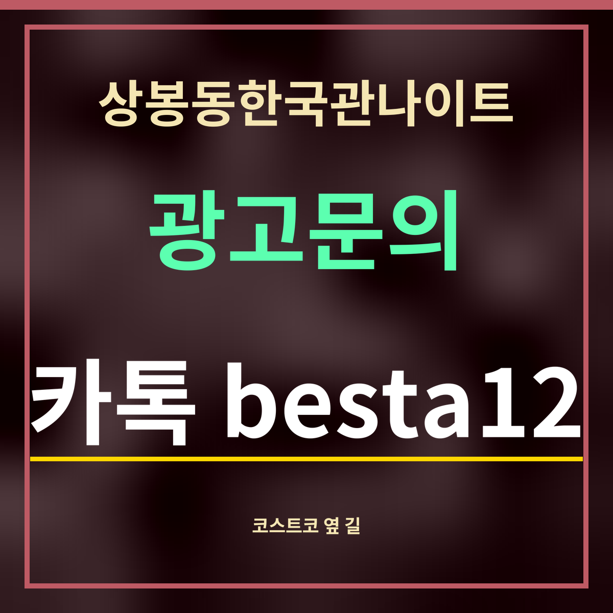

19세 미만 출입 금지
상봉동한국관나이트 찾아가기, 코스트코 상봉점 곁 137m
제휴 없는 정보 안내 · 코스트코 쪽 시설은 카카오맵에 「코스트코 상봉점」을 넣어 나온 것(9월 27일)이고, 거리는 망우로 326에서 잰 값입니다.

한 줄 답: 상봉동한국관나이트(망우로 326 2층)와 코스트코 상봉점(망우로 336)은 같은 망우로에 있고, 둘 사이는 직선 137m입니다. 큰 건물인 코스트코를 먼저 찾으면 길을 잃지 않습니다.
「코스트코 상봉점」 이름으로 잡히는 곳
| 이름(카카오맵) | 분류 | 직선거리 |
|---|---|---|
| 코스트코 상봉점 대여소 | 자전거대여소 | 116m |
| 타이어센터 코스트코상봉점 | 자동차정비 | 132m |
| 코스트코 상봉점 전기차충전소 | 전기차 충전소 | 136m |
| 코스트코코리아 상봉점 | 코스트코코리아 | 137m |
| 코스트코 상봉점 푸드코트 | 푸드코트 | 137m |
| 코스트코상봉점 개방화장실 | 화장실 | 143m |
| 신한 상봉역 ATM 코스트코상봉점 | ATM | 143m |
| 본우리집밥 코스트코상봉점 | 구내식당 | 144m |
표지로 쓰는 법
도로명 주소의 건물번호는 길을 따라 커집니다. 망우로 326과 336은 번호 차이가 10이라, 같은 길 위에서 멀지 않은 사이입니다. 택시나 지도 앱에 가게 이름이 잘 안 잡히면 「코스트코 상봉점」을 찍고 가서 망우로를 따라 326번지를 찾으면 됩니다.
카카오맵에는 망우로 336에 타이어센터, 푸드코트, 개방화장실, 은행 ATM, 전기차 충전소가 함께 나옵니다. 다만 코스트코 매장은 영업시간이 따로 있어, 늦은 밤에는 건물 안 시설을 쓸 수 없을 수 있습니다. 밤에는 이곳을 길 찾는 표지로만 생각하세요.
자주 묻는 것
코스트코 상봉점에서 얼마나 떨어져 있나요?
코스트코코리아 상봉점(망우로 336)까지 직선 137m입니다.
코스트코코리아 상봉점(망우로 336)까지 직선 137m입니다.
주소가 어떻게 되나요?
가게는 서울 중랑구 망우로 326 2층입니다(카카오맵).
가게는 서울 중랑구 망우로 326 2층입니다(카카오맵).
밤에도 코스트코 화장실을 쓸 수 있나요?
코스트코 영업시간에 따라 다를 수 있어 확인하지 못했습니다.
코스트코 영업시간에 따라 다를 수 있어 확인하지 못했습니다.
한 줄 정리: 상봉동한국관나이트는 코스트코 상봉점과 같은 망우로에 있고, 직선 137m — 코스트코를 표지로 찾으세요.
코스트코 옆 따릉이 대여소(116m)는 따릉이 쪽에 있습니다.